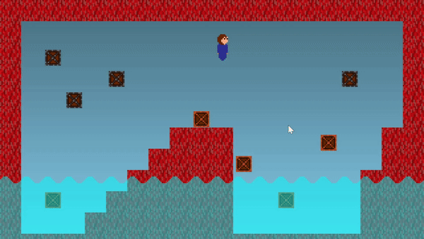

Box Engine
A 2D particle-based, iterative, impulse-based physics engine implemented in GameMaker guided by the teachings of Ian Millington's "Game Physics Engine Development". The game Planar Escape implements this engine for all its physics. It's also available as an asset on the GameMaker Marketplace.